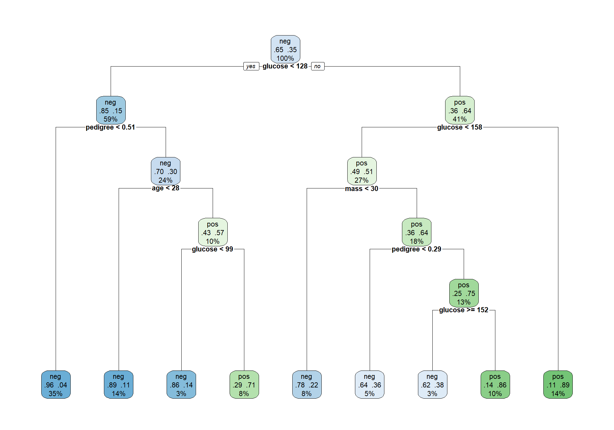
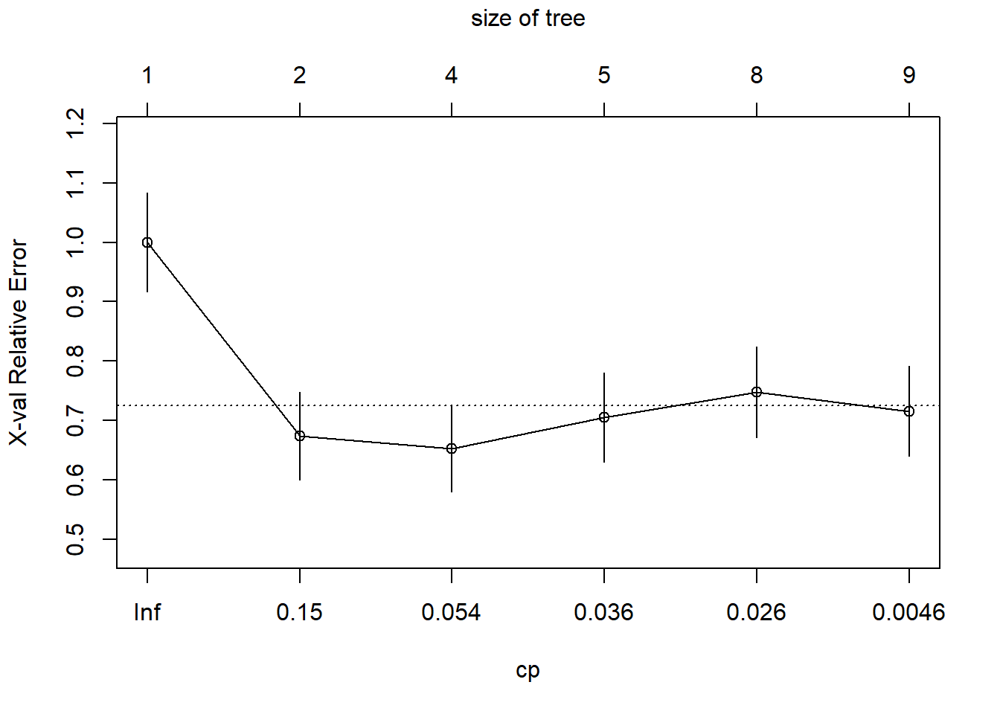
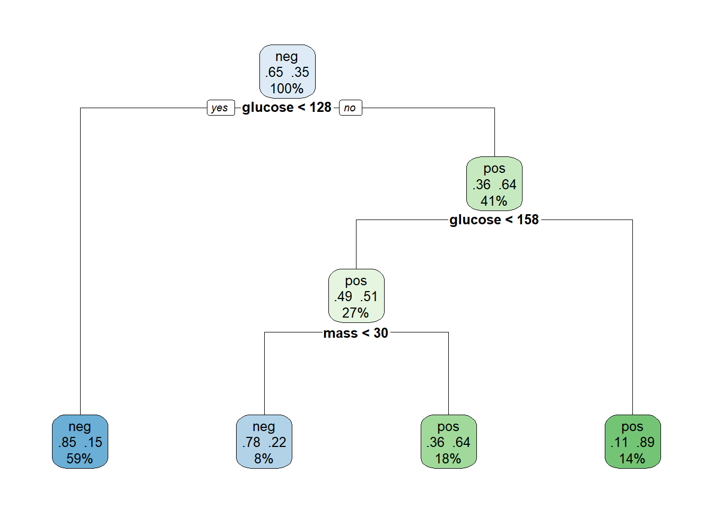
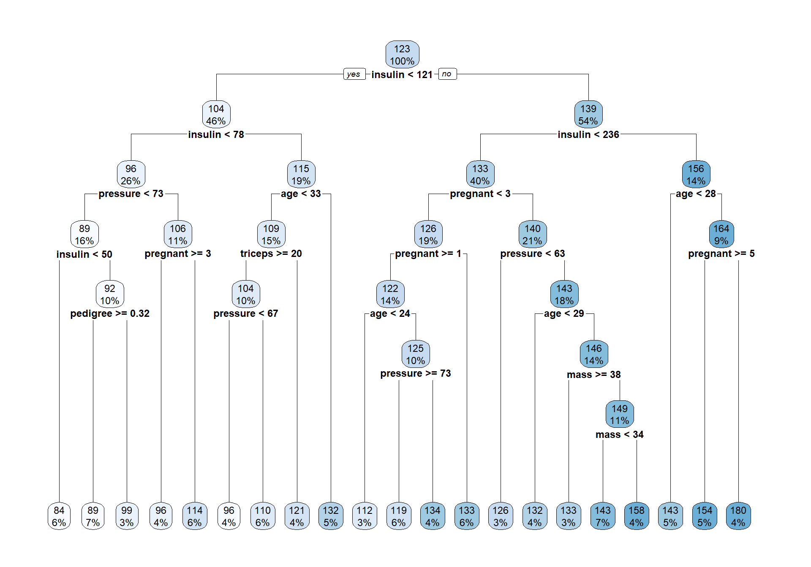
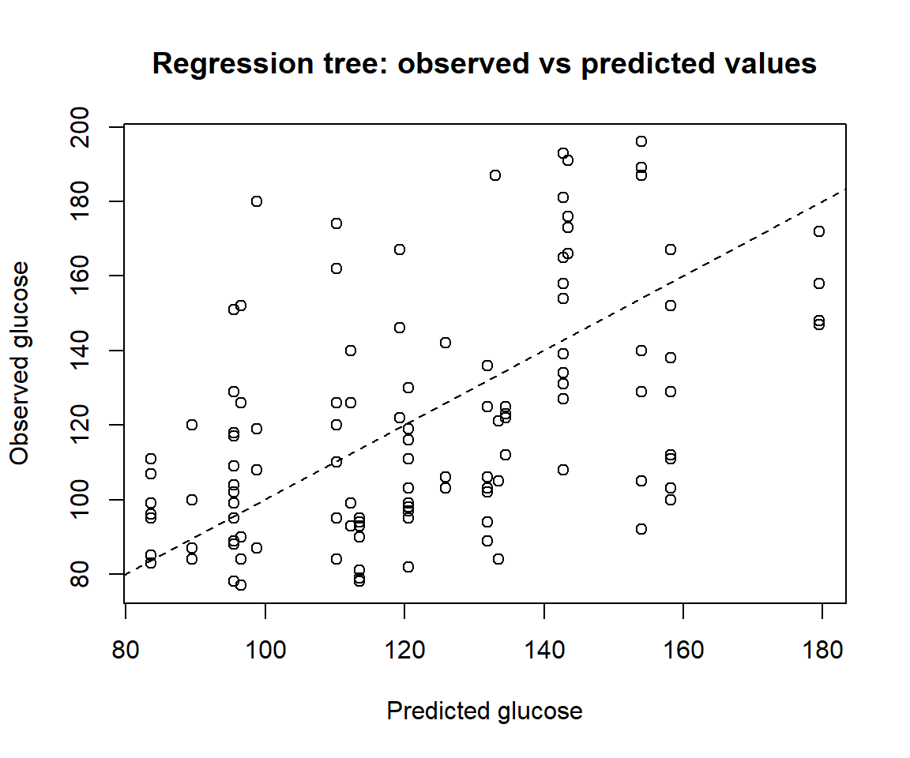
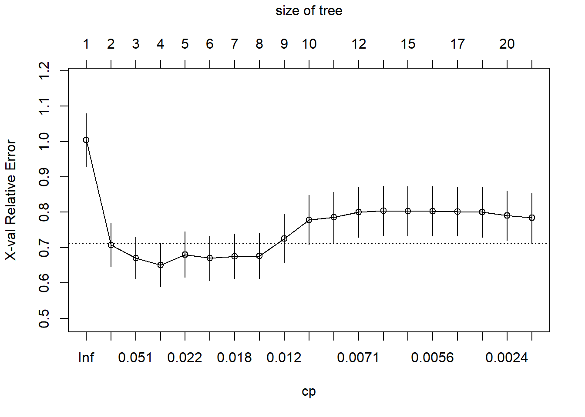
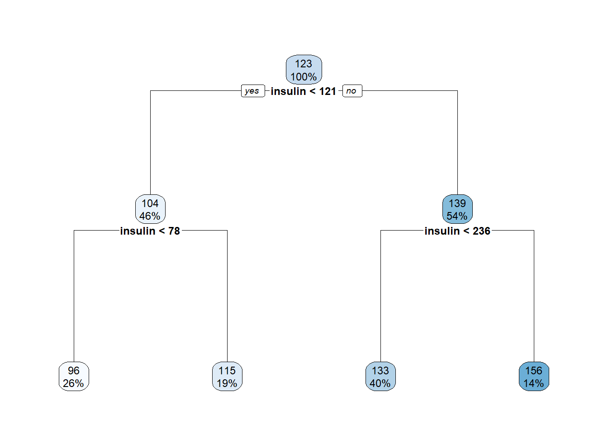

packages <- c("mlbench", "rpart", "rpart.plot", "dplyr", "knitr")
for (pkg in packages) {
if (!require(pkg, character.only = TRUE)) {
install.packages(pkg)
library(pkg, character.only = TRUE)
}
}Lab: Decision Trees for Classification and Regression
A guided practical session with questions
Learning goals
This lab is intended to provide an active exercise on classification and regression trees to illustrate how they can be built and used, interpreted and applied.
The main goal is not only to fit a decision tree, but to understand:
- how a tree partitions the predictor space;
- how a fitted tree produces class predictions and class probabilities;
- why training error is not enough to assess prediction performance;
- how pruning controls model complexity;
- how the same ideas change when the response is quantitative rather than categorical.
The lab is intentionally written so that most questions are transferable to any similar dataset. The default dataset used here is the Pima Indians diabetes dataset, but the structure can be reused with another classification dataset with minimal changes.
Packages
Part 1. Classification tree
1.1 Data and prediction problem
In this example we use the PimaIndiansDiabetes2 dataset from the mlbench package.
data("PimaIndiansDiabetes2", package = "mlbench")
mydataset <- PimaIndiansDiabetes2The response variable is diabetes, a binary factor indicating whether each individual is classified as diabetes-positive or diabetes-negative.
dplyr::glimpse(mydataset)Rows: 768
Columns: 9
$ pregnant <dbl> 6, 1, 8, 1, 0, 5, 3, 10, 2, 8, 4, 10, 10, 1, 5, 7, 0, 7, 1, 1…
$ glucose <dbl> 148, 85, 183, 89, 137, 116, 78, 115, 197, 125, 110, 168, 139,…
$ pressure <dbl> 72, 66, 64, 66, 40, 74, 50, NA, 70, 96, 92, 74, 80, 60, 72, N…
$ triceps <dbl> 35, 29, NA, 23, 35, NA, 32, NA, 45, NA, NA, NA, NA, 23, 19, N…
$ insulin <dbl> NA, NA, NA, 94, 168, NA, 88, NA, 543, NA, NA, NA, NA, 846, 17…
$ mass <dbl> 33.6, 26.6, 23.3, 28.1, 43.1, 25.6, 31.0, 35.3, 30.5, NA, 37.…
$ pedigree <dbl> 0.627, 0.351, 0.672, 0.167, 2.288, 0.201, 0.248, 0.134, 0.158…
$ age <dbl> 50, 31, 32, 21, 33, 30, 26, 29, 53, 54, 30, 34, 57, 59, 51, 3…
$ diabetes <fct> pos, neg, pos, neg, pos, neg, pos, neg, pos, pos, neg, pos, n…summary(mydataset) pregnant glucose pressure triceps
Min. : 0.000 Min. : 44.0 Min. : 24.00 Min. : 7.00
1st Qu.: 1.000 1st Qu.: 99.0 1st Qu.: 64.00 1st Qu.:22.00
Median : 3.000 Median :117.0 Median : 72.00 Median :29.00
Mean : 3.845 Mean :121.7 Mean : 72.41 Mean :29.15
3rd Qu.: 6.000 3rd Qu.:141.0 3rd Qu.: 80.00 3rd Qu.:36.00
Max. :17.000 Max. :199.0 Max. :122.00 Max. :99.00
NA's :5 NA's :35 NA's :227
insulin mass pedigree age diabetes
Min. : 14.00 Min. :18.20 Min. :0.0780 Min. :21.00 neg:500
1st Qu.: 76.25 1st Qu.:27.50 1st Qu.:0.2437 1st Qu.:24.00 pos:268
Median :125.00 Median :32.30 Median :0.3725 Median :29.00
Mean :155.55 Mean :32.46 Mean :0.4719 Mean :33.24
3rd Qu.:190.00 3rd Qu.:36.60 3rd Qu.:0.6262 3rd Qu.:41.00
Max. :846.00 Max. :67.10 Max. :2.4200 Max. :81.00
NA's :374 NA's :11 Questions
Q1. What is the response variable? Is this a classification or a regression problem?
Q2. Identify at least three predictors. For each one, indicate whether it is quantitative or categorical.
Q3. Before fitting a tree, inspect the data. Are there missing values? If so, in which variables? Why could missing values matter for model fitting and model assessment?
Write your answers here or, if available, in the online form provided for the exercise
1.2 Minimal preprocessing
Given this is a classroom lab, we will remove all missing values and use onle complete cases. This is not necessarily the best strategy in a real analysis, but it keeps the focus on tree construction and model assessment.
mydataset_cc <- na.omit(mydataset)
dim(mydataset)[1] 768 9dim(mydataset_cc)[1] 392 9table(mydataset$diabetes)
neg pos
500 268 table(mydataset_cc$diabetes)
neg pos
262 130 Question
Q4. What is the consequence of using na.omit()? In a real study, what alternative preprocessing strategy could be considered?
Write your answers here or, if available, in the online form provided for the exercise
1.3 Train/test split
We split the dataset into training and test sets. The model will be fitted using the training set and evaluated using the test set.
set.seed(123)
prop_train <- 0.70
n <- nrow(mydataset_cc)
train_id <- sample(seq_len(n), size = floor(prop_train * n))
train_data <- mydataset_cc[train_id, ]
test_data <- mydataset_cc[-train_id, ]
nrow(train_data)[1] 274nrow(test_data)[1] 118table(train_data$diabetes)
neg pos
179 95 table(test_data$diabetes)
neg pos
83 35 Questions
Q5. Why do we split the data into training and test sets instead of evaluating the tree on the same data used to fit it?
Q6. Check whether the class distribution is similar in the training and test sets. Why could a very unbalanced split be problematic?
Write your answers here or, if available, in the online form provided for the exercise.
Part 2. Fitting and interpreting a classification tree
2.1 Fit an initial tree
We fit a classification tree using rpart().
require(rpart)
tree_class <- rpart(
diabetes ~ .,
data = train_data,
method = "class",
control = rpart.control(cp = 0.001)
)
tree_classn= 274
node), split, n, loss, yval, (yprob)
* denotes terminal node
1) root 274 95 neg (0.65328467 0.34671533)
2) glucose< 127.5 163 24 neg (0.85276074 0.14723926)
4) pedigree< 0.5085 97 4 neg (0.95876289 0.04123711) *
5) pedigree>=0.5085 66 20 neg (0.69696970 0.30303030)
10) age< 27.5 38 4 neg (0.89473684 0.10526316) *
11) age>=27.5 28 12 pos (0.42857143 0.57142857)
22) glucose< 98.5 7 1 neg (0.85714286 0.14285714) *
23) glucose>=98.5 21 6 pos (0.28571429 0.71428571) *
3) glucose>=127.5 111 40 pos (0.36036036 0.63963964)
6) glucose< 157.5 73 36 pos (0.49315068 0.50684932)
12) mass< 30.2 23 5 neg (0.78260870 0.21739130) *
13) mass>=30.2 50 18 pos (0.36000000 0.64000000)
26) pedigree< 0.285 14 5 neg (0.64285714 0.35714286) *
27) pedigree>=0.285 36 9 pos (0.25000000 0.75000000)
54) glucose>=152 8 3 neg (0.62500000 0.37500000) *
55) glucose< 152 28 4 pos (0.14285714 0.85714286) *
7) glucose>=157.5 38 4 pos (0.10526316 0.89473684) *require(rpart.plot)
rpart.plot(tree_class, extra = 104, fallen.leaves = TRUE, cex = 0.7)
The argument extra = 104 displays the predicted class, the class probabilities and the percentage of observations in each node.
Questions
Q7. Which predictor appears in the root node? What does this suggest about its predictive role in this fitted tree?
Q8. Choose one internal split. Explain it as a decision rule of the form: “if predictor X is below/above a threshold, then observations go to…”.
Q9. Choose one terminal node. What is the predicted class in that node? What are the estimated class probabilities?
Q10. Explain, in your own words, how the tree transforms a vector of predictors \(x\) into a class prediction \(\hat{y}\).
Write your answers here or, if available, in the online form provided for the exercise.
Part 3. Training error, test error and confusion matrix
3.1 Predictions on train and test data
pred_train_class <- predict(tree_class, train_data, type = "class")
pred_test_class <- predict(tree_class, test_data, type = "class")
conf_train <- table(Predicted = pred_train_class, Observed = train_data$diabetes)
conf_test <- table(Predicted = pred_test_class, Observed = test_data$diabetes)
conf_train Observed
Predicted neg pos
neg 165 22
pos 14 73conf_test Observed
Predicted neg pos
neg 68 16
pos 15 19train_error <- mean(pred_train_class != train_data$diabetes)
test_error <- mean(pred_test_class != test_data$diabetes)
train_error[1] 0.1313869test_error[1] 0.26271193.2 Accuracy, sensitivity and specificity
For a binary classification problem, accuracy is often not enough. We also compute sensitivity and specificity. In this dataset, the positive class is coded as pos.
classification_metrics <- function(observed, predicted, positive = "pos") {
observed <- factor(observed)
predicted <- factor(predicted, levels = levels(observed))
tab <- table(Predicted = predicted, Observed = observed)
if (!positive %in% colnames(tab)) {
stop("The specified positive class is not present in the observed data.")
}
negative <- setdiff(colnames(tab), positive)[1]
TP <- tab[positive, positive]
TN <- tab[negative, negative]
FP <- tab[positive, negative]
FN <- tab[negative, positive]
data.frame(
accuracy = (TP + TN) / sum(tab),
sensitivity = TP / (TP + FN),
specificity = TN / (TN + FP),
test_error = 1 - (TP + TN) / sum(tab)
)
}
classification_metrics(train_data$diabetes, pred_train_class, positive = "pos") accuracy sensitivity specificity test_error
1 0.8686131 0.7684211 0.9217877 0.1313869classification_metrics(test_data$diabetes, pred_test_class, positive = "pos") accuracy sensitivity specificity test_error
1 0.7372881 0.5428571 0.8192771 0.2627119Questions
Q11. Compare the training error and the test error. Which one is smaller? Is this expected?
Q12. Why is the training error usually an optimistic estimate of prediction error?
Q13. Interpret the confusion matrix on the test set. Which type of error is more frequent: false positives or false negatives?
Q14. In a biomedical classification problem, why might sensitivity and specificity be more informative than accuracy alone?
Q15. If you repeated the train/test split with another random seed, would you expect exactly the same tree and exactly the same test error? Why?
Write your answers here or, if available, in the online form provided for the exercise.
Part 4. Cost-complexity pruning
A large tree may fit the training data too closely. Cost-complexity pruning controls tree complexity by balancing goodness of fit and tree size.
In rpart, the complexity parameter is called cp. Larger values of cp lead to smaller trees.
4.1 Cross-validation table
printcp(tree_class)
Classification tree:
rpart(formula = diabetes ~ ., data = train_data, method = "class",
control = rpart.control(cp = 0.001))
Variables actually used in tree construction:
[1] age glucose mass pedigree
Root node error: 95/274 = 0.34672
n= 274
CP nsplit rel error xerror xstd
1 0.326316 0 1.00000 1.00000 0.082926
2 0.068421 1 0.67368 0.67368 0.073723
3 0.042105 3 0.53684 0.65263 0.072906
4 0.031579 4 0.49474 0.70526 0.074890
5 0.021053 7 0.40000 0.74737 0.076345
6 0.001000 8 0.37895 0.71579 0.075264plotcp(tree_class)
The cptable contains, among others:
nsplit: number of splits;rel error: relative training error;xerror: cross-validated error;xstd: standard error of the cross-validated error;CP: complexity parameter.
Questions
Q16. What happens to the training error as the number of splits increases? Is this surprising?
Q17. What happens to the cross-validated error as the tree becomes more complex? Does it always decrease?
Q18. Why is cross-validated error more relevant than training error for choosing the size of the tree?
Write your answers here or, if available, in the online form provided for the exercise.
4.2 Select a pruned tree
We first select the tree with minimum cross-validated error.
cp_table <- tree_class$cptable
best_row <- which.min(cp_table[, "xerror"])
best_cp <- cp_table[best_row, "CP"]
best_cp[1] 0.04210526pruned_class <- prune(tree_class, cp = best_cp)
rpart.plot(pruned_class, extra = 104, fallen.leaves = TRUE, cex = 0.8)
4.3 Compare original and pruned trees
pred_test_pruned <- predict(pruned_class, test_data, type = "class")
conf_test_pruned <- table(Predicted = pred_test_pruned, Observed = test_data$diabetes)
conf_test_pruned Observed
Predicted neg pos
neg 72 14
pos 11 21metrics_unpruned <- classification_metrics(test_data$diabetes, pred_test_class, positive = "pos")
metrics_pruned <- classification_metrics(test_data$diabetes, pred_test_pruned, positive = "pos")
comparison_class <- rbind(
unpruned = metrics_unpruned,
pruned = metrics_pruned
)
knitr::kable(round(comparison_class, 3))| accuracy | sensitivity | specificity | test_error | |
|---|---|---|---|---|
| unpruned | 0.737 | 0.543 | 0.819 | 0.263 |
| pruned | 0.788 | 0.600 | 0.867 | 0.212 |
Questions
Q19. Has pruning reduced the size of the tree? Describe the main structural change.
Q20. Has pruning improved the test error in this particular split?
Q21. Suppose the pruned tree has a slightly worse test error but is much smaller. Could it still be preferable? Explain why.
Q22. Explain pruning as a form of regularization. What is being penalized?
Q23. What is the connection between pruning and the bias-variance trade-off?
Write your answers here or, if available, in the online form provided for the exercise.
Part 5. Regression trees using a quantitative response
We now illustrate the same ideas for a regression tree. Instead of predicting the binary response, we use glucose as a quantitative response.
This section is shorter because the aim is not to repeat the whole analysis, but to highlight what changes when the response is numerical.
5.1 Define a regression dataset
We remove the original categorical response diabetes from the predictors and use glucose as the response.
reg_data <- mydataset_cc |>
dplyr::select(-diabetes)
set.seed(123)
n_reg <- nrow(reg_data)
train_id_reg <- sample(seq_len(n_reg), size = floor(prop_train * n_reg))
train_reg <- reg_data[train_id_reg, ]
test_reg <- reg_data[-train_id_reg, ]Question 24
Q24. Why should diabetes be removed from the predictors if we use glucose as the response in this illustrative regression exercise? What would happen if we kept it?
Write your answer here.
5.2 Fit a regression tree
tree_reg <- rpart(
glucose ~ .,
data = train_reg,
method = "anova",
control = rpart.control(cp = 0.001)
)
print(tree_reg)n= 274
node), split, n, deviance, yval
* denotes terminal node
1) root 274 255096.6000 123.20440
2) insulin< 121 125 69202.9900 104.00800
4) insulin< 78 72 34220.8700 96.04167
8) pressure< 73 43 7032.0000 89.00000
16) insulin< 49.5 16 2201.9380 83.56250 *
17) insulin>=49.5 27 4076.6670 92.22222
34) pedigree>=0.3205 19 1896.7370 89.47368 *
35) pedigree< 0.3205 8 1695.5000 98.75000 *
9) pressure>=73 29 21895.2400 106.48280
18) pregnant>=2.5 12 4811.0000 96.50000 *
19) pregnant< 2.5 17 15044.2400 113.52940 *
5) insulin>=78 53 24205.4700 114.83020
10) age< 33 40 12346.4000 109.30000
20) triceps>=19.5 28 5136.9640 104.46430
40) pressure< 67 11 546.7273 95.54545 *
41) pressure>=67 17 3149.0590 110.23530 *
21) triceps< 19.5 12 5026.9170 120.58330 *
11) age>=33 13 6871.6920 131.84620 *
3) insulin>=121 149 101187.8000 139.30870
6) insulin< 236 110 61988.7600 133.21820
12) pregnant< 2.5 53 21017.2100 125.52830
24) pregnant>=0.5 37 11199.5700 122.10810
48) age< 23.5 9 899.5556 112.22220 *
49) age>=23.5 28 9137.7140 125.28570
98) pressure>=73 17 2311.8820 119.35290 *
99) pressure< 73 11 5302.7270 134.45450 *
25) pregnant< 0.5 16 8383.9380 133.43750 *
13) pregnant>=2.5 57 34923.2600 140.36840
26) pressure< 63 9 6394.8890 125.88890 *
27) pressure>=63 48 26287.6700 143.08330
54) age< 28.5 11 3372.7270 132.45450 *
55) age>=28.5 37 21302.8100 146.24320
110) mass>=38.2 7 2792.0000 133.00000 *
111) mass< 38.2 30 16996.6700 149.33330
222) mass< 33.7 18 10838.4400 143.44440 *
223) mass>=33.7 12 4597.6670 158.16670 *
7) insulin>=236 39 23609.7400 156.48720
14) age< 27.5 14 6800.8570 142.71430 *
15) age>=27.5 25 12666.0000 164.20000
30) pregnant>=4.5 15 5294.0000 154.00000 *
31) pregnant< 4.5 10 3470.5000 179.50000 *rpart.plot(tree_reg, fallen.leaves = TRUE, cex = 0.75)
Questions
Q25. What is predicted in each terminal node of a regression tree: a class, a probability, or a numerical value?
Q26. Choose one terminal node. What numerical prediction is assigned to observations falling into that node?
Q27. Compare the interpretation of a terminal node in a classification tree and in a regression tree.
Write your answers here or, if available, in the online form provided for the exercise.
5.3 Prediction error for a regression tree
For regression problems, the usual error measures are based on the difference between observed and predicted numerical values.
pred_train_reg <- predict(tree_reg, train_reg)
pred_test_reg <- predict(tree_reg, test_reg)
mse_train <- mean((train_reg$glucose - pred_train_reg)^2)
mse_test <- mean((test_reg$glucose - pred_test_reg)^2)
rmse_train <- sqrt(mse_train)
rmse_test <- sqrt(mse_test)
mse_train[1] 371.1788mse_test[1] 815.1659rmse_train[1] 19.266rmse_test[1] 28.55111plot(
pred_test_reg, test_reg$glucose,
xlab = "Predicted glucose",
ylab = "Observed glucose",
main = "Regression tree: observed vs predicted values"
)
abline(0, 1, lty = 2)
Questions
Q28. Why do we use MSE or RMSE instead of accuracy for a regression tree?
Q29. Compare training RMSE and test RMSE. What would a large difference suggest?
Q30. In the observed-versus-predicted plot, what would perfect predictions look like?
Write your answers here or, if available, in the online form provided for the exercise.
5.4 Pruning the regression tree
printcp(tree_reg)
Regression tree:
rpart(formula = glucose ~ ., data = train_reg, method = "anova",
control = rpart.control(cp = 0.001))
Variables actually used in tree construction:
[1] age insulin mass pedigree pregnant pressure triceps
Root node error: 255097/274 = 931.01
n= 274
CP nsplit rel error xerror xstd
1 0.3320537 0 1.00000 1.00458 0.075358
2 0.0611113 1 0.66795 0.70767 0.060404
3 0.0422454 2 0.60683 0.67072 0.058737
4 0.0237098 3 0.56459 0.65064 0.061257
5 0.0207515 4 0.54088 0.68028 0.064527
6 0.0195509 5 0.52013 0.66990 0.063422
7 0.0162405 6 0.50058 0.67558 0.063343
8 0.0152942 7 0.48434 0.67701 0.064231
9 0.0087838 8 0.46904 0.72572 0.069071
10 0.0085557 9 0.46026 0.77833 0.070108
11 0.0079970 10 0.45170 0.78622 0.071072
12 0.0063197 11 0.44371 0.80084 0.071572
13 0.0060265 12 0.43739 0.80388 0.069830
14 0.0056495 14 0.42533 0.80288 0.069765
15 0.0056202 15 0.41968 0.80296 0.069795
16 0.0052635 16 0.41406 0.80232 0.069814
17 0.0029534 18 0.40354 0.80000 0.070906
18 0.0018990 19 0.40058 0.79031 0.070027
19 0.0010000 20 0.39868 0.78419 0.069528plotcp(tree_reg)
cp_table_reg <- tree_reg$cptable
best_row_reg <- which.min(cp_table_reg[, "xerror"])
best_cp_reg <- cp_table_reg[best_row_reg, "CP"]
pruned_reg <- prune(tree_reg, cp = best_cp_reg)
rpart.plot(pruned_reg, fallen.leaves = TRUE, cex = 0.75)
pred_test_reg_pruned <- predict(pruned_reg, test_reg)
rmse_test_pruned <- sqrt(mean((test_reg$glucose - pred_test_reg_pruned)^2))
comparison_reg <- data.frame(
model = c("unpruned", "pruned"),
test_RMSE = c(rmse_test, rmse_test_pruned),
terminal_nodes = c(
sum(tree_reg$frame$var == "<leaf>"),
sum(pruned_reg$frame$var == "<leaf>")
)
)
knitr::kable(comparison_reg, digits = 3)| model | test_RMSE | terminal_nodes |
|---|---|---|
| unpruned | 28.551 | 21 |
| pruned | 25.465 | 4 |
Questions
Q31. Did pruning reduce the number of terminal nodes in the regression tree?
Q32. Did pruning improve the test RMSE in this particular split?
Q33. Why can a simpler tree be preferable even if its test RMSE is very similar to that of a larger tree?
Write your answers here or, if available, in the online form provided for the exercise.
Part 6. Final synthesis
Answer the following questions without running more code.
Questions
Q34. In what sense is a decision tree an interpretable model?
Q35. What are the main limitations of a single decision tree?
Q36. What aspects of the analysis would change if the dataset had many more predictors than observations?
Q37. Explain the difference between stopping a tree early and pruning a tree after growing it.
Q38. Summarize, in 5-6 lines, the full workflow followed in this lab: data preparation, train/test split, model fitting, prediction error estimation, pruning and final interpretation.
Write your answers here.
Optional extension for another dataset
If another dataset is used instead of Pima, the core workflow remains the same:
- define the response variable;
- identify whether the task is classification or regression;
- split the data into training and test sets;
- fit an initial tree;
- interpret the main splits and terminal nodes;
- estimate test error using an appropriate metric;
- use cross-validation to choose the degree of pruning;
- compare the original and pruned trees;
- justify the final model in terms of prediction and interpretability.